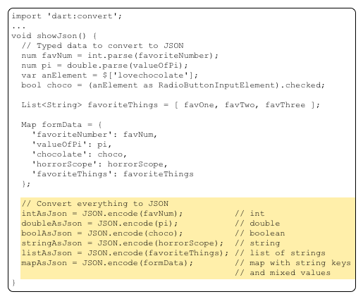
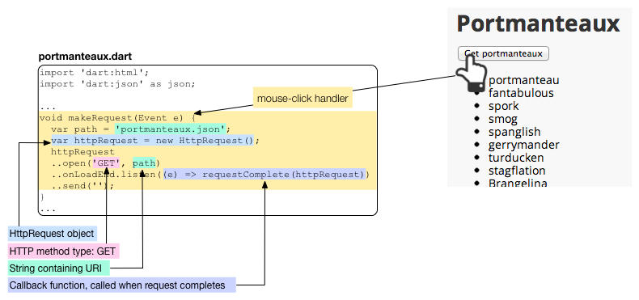

Fetch Data Dynamically
Get data from a file or server.
Web applications often use JSON (JavaScript Object Notation) to pass data between clients and servers. Data can be serialized into a JSON string, which is then passed between a client and server, and revived as an object at its destination. This tutorial shows you how to use functions in the dart:convert library to produce and consume JSON data. Because JSON data is typically loaded dynamically, this tutorial also shows how a web app can use an HTTP request to get data from an HTTP server. For web apps, HTTP requests are served by the browser in which the app is running, and thus are subject to the browser’s security restrictions.
- About JSON
- Serializing data into JSON
- Parsing JSON data
- About URIs and HTTP requests
- Using the getString() function to load a file
- Using an HttpRequest object to load a file
- Other resources
- What next?
About JSON
The JSON data format is easy for humans to write and read because it is lightweight and text based. With JSON, various data types and simple data structures such as lists and maps can be serialized and represented by strings.
Try it!
The app running below, its_all_about_you,
displays the JSON string for data of various types.
Change the values of the input elements
and check out the JSON format for each data type.
The dart:convert library contains two convenient functions for working with JSON strings:
| dart:convert function | Description |
|---|---|
| JSON.decode() | Builds Dart objects from a string containing JSON data. |
| JSON.encode() | Serializes a Dart object into a JSON string. |
To use these functions, you need to import dart:convert into your Dart code:
import 'dart:convert';
The JSON.encode() and JSON.decode() functions can handle these Dart types automatically:
- num
- String
- bool
- null
- List
- Map
Serializing data into JSON
Use the JSON.encode() function to serialize an object that supports JSON.
Here’s the function, showJson, from the its_all_about_you example that
converts all of the data to JSON strings.

Below is the JSON string that results from the code using the original values from the its_all_about_you app.

Boolean and numeric values
appear as they would if they were literal values in code,
without quotes or other delineating marks.
A boolean value is either true or false.
A null object is represented with null.
Strings are contained within double quotes. A list is delineated with square brackets; its items are comma-separated. The list in this example contains strings. A map is delineated with curly brackets; it contains comma-separated key/value pairs, where the key appears first, followed by a colon, followed by the value. In this example, the keys in the map are strings. The values in the map vary in type but they are all JSON-parsable.
Parsing JSON data
Use the JSON.decode() function from the dart:convert library to create Dart objects from a JSON string. The its_all_about_you example initially populates the values in the form from this JSON string:
String jsonDataAsString = '''
{ "favoriteNumber":44,
"valueOfPi":3.141592,
"chocolate":true,
"horrorScope":"virgo",
"favoriteThings":["raindrops",
"whiskers",
"mittens"]
}
''';
Map jsonData = JSON.decode(jsonDataAsString);
This code calls the JSON.decode() function with a properly formatted JSON string. Note that Dart strings can use either single or double quotes to denote strings. JSON requires double quotes.
In this example, the full JSON string is hard coded into the Dart code, but it could be created by the form itself or read from a static file or received from a server. An example later on this page shows how to dynamically fetch JSON data from a file that is co-located with the code for the app.
The JSON.decode() function reads the string and builds Dart objects from it. In this example, the JSON.decode() function creates a Map object based on the information in the JSON string. The Map contains objects of various types including an integer, a double, a boolean value, a regular string, and a list. All of the keys in the map are strings.
About URIs and HTTP requests
To make an HTTP GET request from within a web app, you need to provide a URI (Uniform Resource Identifier) for the resource. A URI (Uniform Resource Identifier) is a character string that uniquely names a resource. A URL (Uniform Resource Locator) is a specific kind of URI that also provides the location of a resource. URLs for resources on the World Wide Web contain three pieces of information:
- The protocol used for communication
- The hostname of the server
- The path to the resource
For example, the URL for this page breaks down as follows:

This URL specifies the HTTP protocol. At its most basic, when you enter an HTTP address into a web browser, the browser sends an HTTP GET request to a web server, and the web server sends an HTTP response that contains the contents of the page (or an error message).

Most HTTP requests in a web browser are simple GET requests asking for the contents of a page. However, the HTTP protocol allows for other types of requests, such as POST for sending data from the client.
A Dart web app running inside of a browser can make HTTP requests. These HTTP requests are handled by the browser in which the app is running. Even though the browser itself can make HTTP requests anywhere on the web, a Dart web app running inside the browser can make only limited HTTP requests because of security restrictions. Practically speaking, because of these limitations, HTTP requests from web apps are useful only for retrieving information in files specific to and co-located with the app.
The SDK provides these useful classes for formulating URIs and making HTTP requests:
| Dart code | Library | Description |
|---|---|---|
| Uri | (core library) | An object representing a URI. |
| HttpRequest | dart:html | Client-side HTTP request object. For use in web apps. |
| HttpRequest | dart:io | Server-side HTTP request object. Does not work in web apps. |
Using the getString() function to load a file
One useful HTTP request your web app can make is a GET request
for a data file served from the same origin as the app.
The example below,
portmanteaux_simple, includes a data file
called portmanteaux_simple.json that contains a JSON-formatted list of words.
When you click the button,
the app makes a GET request of the server
and loads the file.
Try it! Click the button.
This program uses a convenience method,
getString(),
provided by the HttpRequest class
to request the file from the server.
The getString() method uses a Future object to handle the request. A Future is a way to perform potentially time-consuming operations, such as HTTP requests, asynchronously. If you haven’t encountered Futures yet, you can learn more about them in Use Future-Based APIs. Until then, you can use the code above as an idiom and provide your own code for the body of the processString() function and your own code to handle the error.
Using a relative URI
The URI used for the GET request specifies just the name of the portmanteaux_simple.json data file. Let’s take a look at how that works.
Open the application directory in Dart Editor, select the web/portmanteaux_simple.html file, and run the program. Before doing anything else, notice the URI for the program in Dartium.
-
The server designation 127.0.0.1 is the standard for referring to this computer—the computer on which the program is running. (
localhostis a human-friendly synonym for 127.0.0.1.) -
3030 is a port number. Because a computer can run multiple servers at once, to avoid conflicts each server must listen on its own port. Port numbers from 0 to 1024 are called well-known ports and are reserved for use by system processes that provide widely used types of network services. Typically HTTP servers listen on port 80. On most systems, port numbers from 1024 to 49151 are free to be used by any program. Dart Editor listens on port 3030.
-
The rest of the URI is the absolute pathname to the HTML file that hosts the app.
The HttpRequest object resolves the file name to an absolute URI using the URI for the current web page as its basis.
The GET request in this example is successful because the app and the requested resource are from the same origin:
Using an HttpRequest object to load a file
The getString() method is good for an HTTP GET request that returns
a string loaded from the resource.
For different cases,
you need to create an HttpRequest object,
configure its header and other information,
and use the send() method to make the request.
This section looks at a new version of the portmanteaux example, called portmanteaux, that has been rewritten to use an explicitly constructed HttpRequest object.
Setting up the HttpRequest object
The mouse-click handler for the button creates an HttpRequest object, configures it with a URI and callback function, and then sends the request. Let’s take a look at the Dart code:
void makeRequest(Event e) {
var path = 'portmanteaux.json';
var httpRequest = new HttpRequest();
httpRequest
..open('GET', path)
..onLoadEnd.listen((e) => requestComplete(httpRequest))
..send('');
}

Sending the request
The send() method sends the request to the server.
httpRequest.send('');
Because the request in this example is a simple GET request, the code can send an empty string. For other types of requests, such as POST requests, this string can contain further details or relevant data. You can also configure the HttpRequest object by setting various header parameters using the setRequestHeader() method.
Handling the response
To handle the response from the request,
you need to set up a callback function
before calling send().
Our example sets up a one-line callback function
for onLoadEnd events
that in turn calls requestComplete().
This callback function is called when the request completes,
either successfully or unsuccessfully.

The callback function for our example,
requestComplete(),
checks the status code for the request.
If the status code is 200,
the file was found and loaded successfully,
The contents of the requested file, portmanteaux.json, are
returned in the responseText property of an HttpRequest object.
Using the JSON.decode() function from the dart:convert library,
the code easily converts the JSON-formatted list of words
to a Dart list of strings,
creates a new LIElement for each one,
and adds it to the <ul> element on the page.
Populating the UI from JSON
The data file in the portmanteaux example, portmanteaux.json, contains a JSON-formatted list of strings.
[ "portmanteau", "fantabulous", "spork", "smog", "spanglish", "gerrymander", "turducken", "stagflation", "Brangelina", "freeware", "oxbridge", "palimony", "brunch", "blog", "chortle", "Hassenpfeffer", "Schnitzelbank" ]
Upon request, the server reads this data from the file and sends it as a single string to the client program. The client program receives the JSON string and uses JSON.decode() to create the String objects specified by the JSON string.

Other resources
Check out Chris Buckett’s article, Using Dart with JSON Web Services, for more information and an example with source code for both client and server programs.
What next?
-
If you skipped the previous tutorial, Use Future-Based APIs, we highly recommend that you go back and learn about Futures before going any further.
-
The next tutorial, Get Input from a Form, contains a client/server example that shows you how to use a form to get data from the user, and using JSON, send that form to a server, and handle the server’s response.